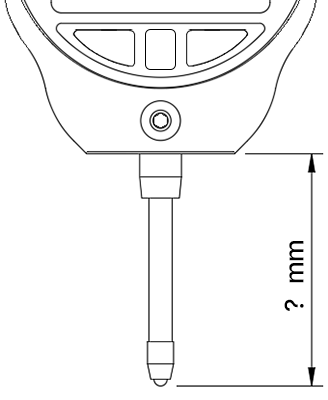

Bambu Lab H2 Series Bed Tramming
Custom GCODE Generator
To view the model/instructions on MakerWorld,
click here
.
Printer Model
i
Select your Bambu Lab printer model (H2S, H2D, or H2C).
H2S
H2D
H2C (not personally tested)
Bed Temperature
i
Choose ambient or set a custom bed temperature to (maybe) account for some thermal expansion. Not a good idea to set a REALLY high temperature unless you are doing very quick test points.
Ambient
Custom:
°C
Number of Measurement Rounds
i
Select how many rounds the bed leveling routine should perform.
1
2
3
4
5
Time (in seconds) at Each Measurement Point
i
Set the pause time at each measurement point.Choose uniform or custom per round.
Uniform:
Custom per Round
Distance Between Printed Part and Indicator Tip
i
After locking your indicator in the mount, measure and enter the distance between the printed part and the indicator tip to avoid collisions.

Distance (mm):
Probe Height
i
Set the height that the bed will approach when taking measurements. This is essentially the nozzle offset and 5mm is a good starting point.
Distance (mm):
Play Sounds
i
Choose whether the printer should emit beeps when it's time to zero the indicator (2 beeps) and when the toolhead is moving to the next measurement point (1 beep).
Yes
No
Output GCODE
or
Download GCODE
Attach indicator with tip NOT touching the bed prior to running GCODE!
Generated GCODE: